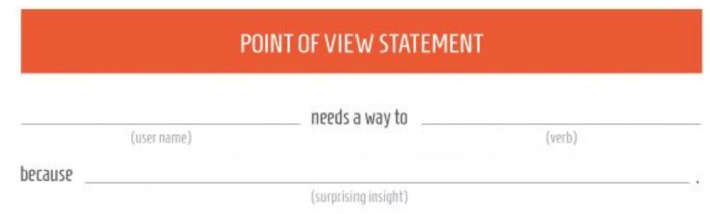
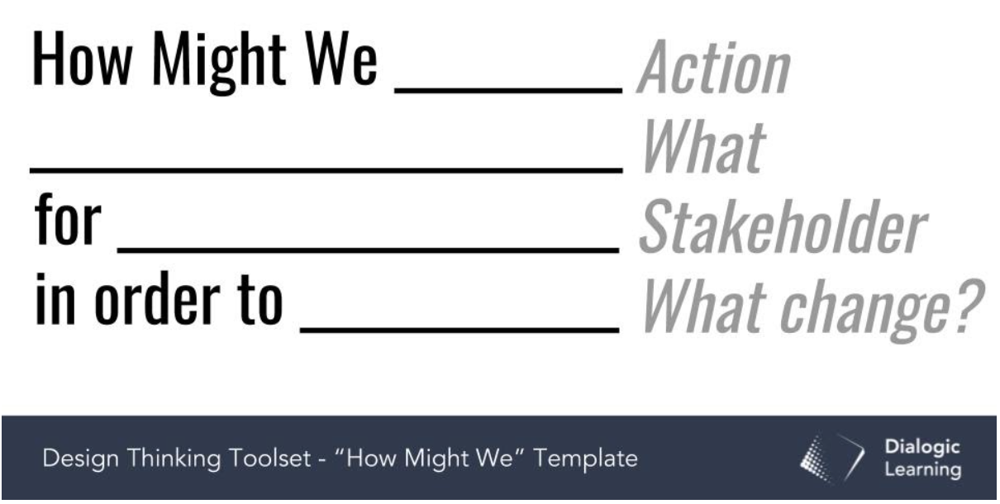

Design Thinking 1: Forstå
I denne fasen er behovsanalyse, det å forstå kunden/oppdragsgiveren og sluttbrukeren sentralt.
Hva er egentlig problemet vi skal løse? Og for hvem er det et problem?
Kunden uttrykker ofte at det er et sprik mellom ønsket situasjon og dagens situasjon, og det kan
være nødvendig å hjelpe kunden med å finne ut av hva som egentlig er ønsket situasjon. Dette kan gjøres
ved hjelp av intervjuer med potensielle brukere, brukertester av konkurrerende nettsteder,
spørreundersøkelser, markedsundersøkelser mm.
Behovsanalyse
I behovsanalyse stiller vi spørsmål til hva som er problemet og for hvem.
For å finne ut hva som er problemet må vi aktivt finne ut av det, fordi forståelse
av brukerens eller kundens behov er grunnlaget for gode brukergrensesnitt. Dette er en komplisert
prosess, fordi det finnes et menneskelig mangfold. Menneskers bruk av datamaskin farges av
flere forhold; alder, interesser, kjønn, utdanningsnivå og dataferdigheter, for å nevne noe.
Ferdighetsnivåene Nybegynner, Avansert nybegynner, Kompetent og Ekspert varierer på skalaer
over nervøsitet/frykt, tålmodighet og evne til å finne løsninger på problemer
I tillegg må vi vite noe om brukerens kontekst. Skal det brukes personlig eller på jobb?
For å underholde eller være nyttig? Og vi må vite noe om vokabularet som brukes.
Primært bør vi observere brukeren eller kunden i stedet for å høre på hva de sier at de gjør.
POV (Point of View)
En god problemformulering er viktig for hele prosjektet, dette kan formuleres i en Point of View-statement:
Gjennomgang med høyttenkning:
Det er en metode der vi får brukeren til å prate høyt og kommentere hva hen gjør og hvorfor hen gjør det, mens vi observerer. Her er det viktig å holde en nøytral mine, og holde brukeren i tale. Ved pauser som signaliserer usikkerhet, stiller vi spørsmål om “hvilke muligheter vurderer du nå?” “Er det noe som er galt/rart?”. Målet er ikke å løse oppgaven men å samle informasjon
Gjennomgang i etterkant:
Kan gjøres med eller uten videoopptak. Brukes der gjennomgang med høyttenkning ikke er mulig - f.eks hvis brukeren må samtale med kunder eller det er sekundærbrukere tilstede. Brukeren observeres mens hendelser noteres, og brukeren bes kommentere etterpå.
Rollespill:
Brukes for å gjennomgå situasjoner som sjelden inntreffer. Litt som skuespill, men ingen publikum. Alle er deltakere. Dette kan avdekke problemer med rutiner og atferd.
Fokusgrupper:
Det er en metode der 6-12 personer inviteres til styrt gruppediskusjon. Dette avhenger av en dyktig moderator med gode personlige egenskaper. Det er en form for gruppeintervju, men diskusjon mellom deltakere kan frambringe terminologi. Fokusgrupper er ikke så vanlig innen brukergrensesnittutvikling pga vanskelighetene. Det være seg en moderator som farger resultatene, mangel på anonymitet som fører til forknytt stemning eller faren for at sterke personligheter tar for stor plass.
Intervjuer:
Det er hovedsakelig snakk om to typer;
Åpne, der man fisker etter viktig informasjon.
Fokuserte, der man spør om spesifikke detaljer.
Det brukes i innledende faser av et prosjekt for å få en overordnet forståelse av hva som er
problemstillingen. Det er feilkilder ved bruk av intervju. Intervjuobjektet husker ikke alle de
viktige detaljene, intervjuobjektet kan ha en egen tolkning av virkeligheten som ikke nødvendigvis
stemmer, og intervjueren kan tolke intervjuobjektet feil. Et godt intervju kjennetegnes ved at
virkeligheten beskrevet av intervjuobjektet samsvarer med hva som er dokumentert av intervjueren.
Bruk åpne spørsmål; “Forklar hva…”, “hvordan går du fram…”, “hvorfor gjør du..” Unngå lukkede
spørsmål som gir ja/nei-svar. Unngå avbrytelser av intervjuobjektet. En styringsteknikk er å repetere
utvalgte ord. Signaliser at du følger med både ved kroppsspråk og tilbakemeldinger som “ja”, “uhumm”,
“skjønner”. Unngå faser som signaliserer overraskelse som “jasså?” “Du verden?”. Start intervjuet med
oppvarmingsspørsmål for å skape trygghet og tillit. Spør om navn, yrke og erfaringer knyttet til
hovedspørsmålet. Avslutt intervjuet med spørsmål om det er noe det er glemt å spørre om.
Spørreundersøkelser:
Brukes for å samle inn informasjon fra større gruppe hvor det er urealistisk å bruke intervju.
De er lette å distribuere, fylle ut og analysere. Bør brukes etter andre
informasjonsinnhentingsteknikker som f.eks. intervjuer. Åpne spørsmål gir kvalitative svar hvor
vi kan finne nye problemstillinger. Lukkede spørsmål gir kvantitative svar som gir indikasjon på
omfang. Anbefalt å møte personlig i gruppesamlinger da dette gir høyest svarprosent.
Utformingen av spørreundersøkelser kan variere. Tenk språkbruk og bruk av likertskalaer. Skal det
være mulighet for nøytralt svaralternativ (oddetall av svaralternativer) eller skal det fremtvinges
et standpunkt (partall)? Stilen bør være gjennomført. Spørsmålene bør være i økende
vanskelighetsgrad/kontroversgrad, og ikke til å starte med. Bland negativt og positivt ladede
spørsmål, for å hindre at folk bare krysser av på feks likertskala nr 2 hele veien.
I behovsanalysen stiller vi som sagt spørsmål til hva som er problemet og for hvem. Da må vi også
foreta en undersøkelse på miljøet brukeren befinner seg i. Hvor skal systemet brukes-
innendørs/utendørs? Hva har brukeren tilgjengelig av utstyr? Er det mørkt/lyst - eller refleksjoner
fra sola? Må brukeren stå eller sitte? Er det varmt/kaldt - må brukeren ha votter? Er det mye støy?
Har brukeren olje på hendene? Her må vi tilbake til å observere brukeren.
Frilisting:
Brukerne bes skrive ned en liste over funksjonalitet ved et system de synes er viktig. Resultatene telles opp i de forskjellige kategoriene og rangeringslister lages.
Kjepphestmetoden:
Er en lukket versjon av frilisting. Kan brukes med minst 20 brukere. Brukerne får en liste med opptil 100 funksjonaliteter, hvor de skal velge ut de 5 viktigste og rangere dem.
Organisering
Organisering kan gjøres alfabetisk, kronologisk, geografisk, tematisk eller en blanding av disse (tvetydig). Hva som er mest hensiktsmessig spør vi brukerne om indirekte ved bruk av kortsortering.
Kortsortering:
Innhold (40-200) skrives på hvert sitt kort. Hver bruker gis en kortstokk og bes om å sortere
kortene i kategorier og navngi hver bunke. De forskjellige sorteringene analyseres ved bruk av
statistiske verktøy. Kortsortering kan gjøres både åpent og lukket. Ved åpne kortsorteringer bestemmer
brukerne kategoriene. Dette er egnet når man starter på bar bakke. Ved lukket kortsortering forholder
brukerne seg til eksisterende kategorier. Dette er egnet når man skal videreutvikle eksisterende
system ved å tilføre eller endre innhold.
Kortsortering kan gjøres individuelt eller i grupper. Individuelt får hver deltaker sin egen bunke.
Målet er å samle inn mange svar og lete etter statistiske mønstre. Grupper sorterer en kortstokk i
fellesskap. Målet er her ikke selve sorteringsmønsteret men observasjon. Hvilken terminologi benytter
de? Hva er argumentene?
Kulturelle prober: Dagbokstudier. Å observere barn feks gjør at barna ikke oppfører seg slik de
vanligvis gjør. Et annet eksempel er tungmetallrockere. Vanskelig for en observatør å få innpass.
Informasjonsinnsamling ved bruk av kulturelle prober er basert på selvrapporterting. De får utlevert
en pakke bestående av gjenstander personen kan bruke til å dokumentere sin tilværelse i en begrenset
tidsperiode på en til to uker. Dette kan være digitalkamera, videokamera, lydopptaker, papir og penn
eller en dagbok.
Når vi har funnet ut hva som er problemet, er neste steg for hvem er det et problem? Hvem er de?
Personas
Her lager man eksempler med relevante beskrivelser. Deretter finner man behovene for hver målgruppe. Personas er ikke ekte brukere. De er oppdiktede portretter av brukere. Det man faktisk ved om ekte brukere dokumenteres i form av personas. Hva er personasens stillingstittel? Alder? Utdannelse? Hvilke kanaler bruker personasen for å innhente informasjon? Har personasen noen mål du kan hjelpe til å nå?
How might we?
Først når vi forstår kundens behov, kan vi begynne å se på løsninger:
